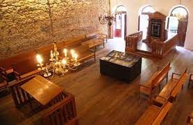

Pontos turisticos
Sinagoga Kahal Zur Israel
Sinagoga Kahal Zur Israel é uma sinagoga localizada na cidade do Recife, no estado de Pernambuco, no Brasil. Suas instalações compreendem hoje o Arquivo Histórico Judaico de Pernambuco, no bairro do Recife, no centro histórico da cidade. Foi a primeira sinagoga da América.

Parque das Esculturas
O Parque das Esculturas Francisco Brennand é um museu de arte a céu aberto localizado na cidade do Recife, capital do estado brasileiro de Pernambuco. Constitui um dos principais feitos do artista plástico pernambucano Francisco Brennand.